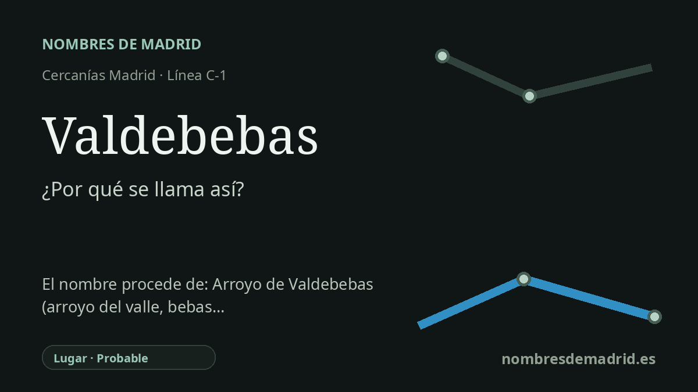

Publicado el · Investigación de Nombres de Madrid · Cómo verificamos cada origen · 13 fuentes consultadas
Respuesta rápida
La estación de Valdebebas recibe el nombre del nuevo desarrollo urbano del noreste de Madrid. Ese nombre conserva un hidrónimo y topónimo rural anterior: el arroyo de Valdebebas, documentado históricamente también como Valdebeba o Valdevebas.
La historia del nombre
La estación de Valdebebas recibe el nombre del ámbito urbano de Valdebebas, en el noreste de Madrid. La parada se abrió para dar servicio al nuevo barrio residencial y de actividad situado junto al corredor aeroportuario, la Ciudad Deportiva del Real Madrid y el gran parque forestal. En términos de transporte es un nombre reciente, pero no nació como una marca inventada para un barrio nuevo.
Detrás del nombre de la estación está el antiguo arroyo de Valdebebas. Las fuentes municipales e hidrológicas sitúan este curso dentro del sistema de drenaje hacia el Jarama, con un trazado de oeste a este por el borde norte de la expansión urbana madrileña. Una memoria municipal de higiene y salubridad de 1929 ya trataba este arroyo como el desagüe natural principal del antiguo término de Hortaleza hacia la cuenca del Jarama.
La palabra pertenece a una familia muy común de topónimos castellanos que empiezan por Valde-, forma contraída de 'valle de'. Lo más difícil es el segundo elemento. Los materiales toponímicos recogen formas antiguas o variantes como Valdebeba, Valdebebas de Cristóbal, Valdebeba de Orgar y Valdevebas, pero las fuentes disponibles no explican con seguridad qué significaba aquí 'beba' o 'bebas'.
El distrito moderno reutilizó este antiguo nombre rural e hidráulico cuando Madrid planificó la gran operación denominada Ciudad Aeroportuaria-Parque de Valdebebas dentro del marco del Plan General de 1997 y de los documentos urbanísticos posteriores. El parque forestal, inaugurado en 2015 con 470 hectáreas según el Ayuntamiento, se diseñó sobre antiguos eriales, escombreras y suelos cultivados, con elementos ornamentales de agua y referencias paisajísticas recuperadas, no como una simple restitución completa del antiguo arroyo.
La interpretación mejor respaldada es esta: la estación se llama así por el barrio de Valdebebas, y el barrio conserva el nombre del arroyo de Valdebebas y de antiguos topónimos rurales Valdebeba. El elemento 'Val-' está claro; el significado de 'bebas' no lo está. Las explicaciones que lo relacionan con abrevaderos o con una palabra prerromana deben presentarse solo como hipótesis mientras no se localice una fuente especializada más directa.